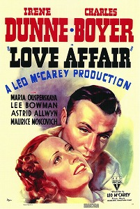

Love Affair
12th Academy Awards
(Oscars 1940)
6 Nominations, 0 Awards
| Nominations | ||
|---|---|---|
| Category | Nominees | Result |
| Outstanding Production | RKO Radio | Nominated |
| Actress | Irene Dunne | Nominated |
| Actress in a Supporting Role | Maria Ouspenskaya | Nominated |
| Writing (Original Story) | Leo McCarey and Mildred Cram | Nominated |
| Art Direction | Al Herman and Van Nest Polglase | Nominated |
| Music (Song) "Wishing" |
Buddy de Sylva | Nominated |